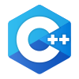

Python

Aprende el lenguaje de mayor crecimiento mundial. Ideal para automatización de tareas, análisis de datos y desarrollo ágil desde cero.
Ver Contenido del Curso
Fundamentos e I/O: Variables, tipos dinámicos, operadores y formateo avanzado con f-strings en salida de datos.
Estructuras de Control: Flujos condicionales (if-elif-else), ciclos (while/for-in) y control de bucles (break/continue).
Estructuras de Datos: Listas mutables (indexación, slicing, .split), diccionarios clave-valor y colecciones bidimensionales.
Modularidad y Robustez: Funciones (`def`), parámetros, retorno de valores y control de errores con bloques try-except.
Persistencia en JSON: Lectura y escritura de datos estructurados en archivos locales mediante el módulo nativo json.
Días y Horarios locales
Lunes, Miércoles y Viernes
22:00 - 23:30 (Hora BO)
Inversión Oficial
250 BOB
C++

Domina el control de la memoria y la velocidad. Forja bases ultra sólidas para algoritmos y programación competitiva desde cero.
Ver Contenido del Curso
Fundamentos: Variables, constantes, tipado fuerte (int, float, bool, char), entrada/salida (`cin`/`cout`), operadores y expresiones.
Estructuras de Control: Flujos condicionales (`if`/`else if`/`switch`) y repetitivas (`while`/`do-while`/`for`).
Manejo de Cadenas: Objetos `std::string`, medición de longitud (`.length()`), subcadenas (`.substr()`) y recorrido indexado como vector.
Estructuras de Datos: Arreglos estáticos unidimensionales (vectores numéricos) y bidimensionales (matrices de datos).
Modularidad: Prototipos y definición de funciones, pasaje de parámetros (por valor y referencia) y retorno de valores.
Días y Horarios locales
Martes y Jueves
19:30 - 21:30 (Hora BO)
Inversión Oficial
250 BOB
Java

El pilar del desarrollo corporativo y bancario. Aprende un tipado rígido y estructurado ideal para proyectos complejos.
Ver Contenido del Curso
Fundamentos: Variables, constantes, tipado fuertemente estático, entrada/salida (`Scanner`/`System.out`), operadores y expresiones.
Estructuras de Control: Flujos secuenciales, condicionales (`if`/`else`/`switch`) y repetitivas (`while`/`do-while`/`for`).
Manejo de Cadenas: Clase `String`, medición (`.length()`), subcadenas (`.substring()`), comparaciones seguras (`.equals()`) y recorrido por caracteres.
Estructuras de Datos: Arreglos estáticos unidimensionales (vectores), bidimensionales (matrices) e introducción a colecciones dinámicas (`ArrayList`).
Modularidad: Estructura de métodos estáticos (`static`), paso de parámetros por valor, retorno de datos y ámbito de variables.
Días y Horarios locales
Lunes y Miércoles
19:30 - 21:30 (Hora BO)
Inversión Oficial
250 BOB